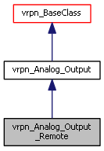

Inheritance diagram for vrpn_Analog_Output_Remote:

Public Member Functions | |
| vrpn_Analog_Output_Remote (const char *name, vrpn_Connection *c=NULL) | |
| virtual | ~vrpn_Analog_Output_Remote (void) |
| virtual void | mainloop () |
| Called once through each main loop iteration to handle updates. | |
| virtual bool | request_change_channel_value (unsigned int chan, vrpn_float64 val, vrpn_uint32 class_of_service=vrpn_CONNECTION_RELIABLE) |
| virtual bool | request_change_channels (int num, vrpn_float64 *vals, vrpn_uint32 class_of_service=vrpn_CONNECTION_RELIABLE) |
 Public Member Functions inherited from vrpn_Analog_Output Public Member Functions inherited from vrpn_Analog_Output | |
| vrpn_Analog_Output (const char *name, vrpn_Connection *c=NULL) | |
| void | o_print (void) |
| vrpn_int32 | getNumChannels () const |
| Public Member Functions inherited from vrpn_BaseClass | |
| vrpn_BaseClass (const char *name, vrpn_Connection *c=NULL) | |
| Names the device and assigns or opens connection, calls registration methods. | |
| virtual | ~vrpn_BaseClass () |
| virtual vrpn_Connection * | connectionPtr () |
| Returns a pointer to the connection this object is using. | |
| Public Member Functions inherited from vrpn_BaseClassUnique | |
| vrpn_BaseClassUnique () | |
| virtual | ~vrpn_BaseClassUnique () |
Protected Member Functions | |
| virtual vrpn_int32 | encode_change_to (char *buf, vrpn_int32 chan, vrpn_float64 val) |
| virtual vrpn_int32 | encode_change_channels_to (char *buf, vrpn_int32 num, vrpn_float64 *vals) |
| Protected Member Functions inherited from vrpn_Analog_Output | |
| virtual int | register_types (void) |
| Register the types of messages this device sends/receives. | |
| Protected Member Functions inherited from vrpn_BaseClass | |
| virtual int | init (void) |
| Initialize things that the constructor can't. | |
| virtual int | register_senders (void) |
| Register the sender for this device (by default, the name of the device). | |
| Protected Member Functions inherited from vrpn_BaseClassUnique | |
| int | register_autodeleted_handler (vrpn_int32 type, vrpn_MESSAGEHANDLER handler, void *userdata, vrpn_int32 sender=vrpn_ANY_SENDER) |
| Registers a handler with the connection, and remembers to delete at destruction. | |
| int | send_text_message (const char *msg, struct timeval timestamp, vrpn_TEXT_SEVERITY type=vrpn_TEXT_NORMAL, vrpn_uint32 level=0) |
| Sends a NULL-terminated text message from the device d_sender_id. | |
| void | server_mainloop (void) |
| Handles functions that all servers should provide in their mainloop() (ping/pong, for example) Should be called by all servers in their mainloop() | |
| void | client_mainloop (void) |
| Handles functions that all clients should provide in their mainloop() (warning of no server, for example) Should be called by all clients in their mainloop() | |
Static Protected Member Functions | |
| static int VRPN_CALLBACK | handle_report_num_channels (void *userdata, vrpn_HANDLERPARAM p) |
Additional Inherited Members | |
| Public Attributes inherited from vrpn_BaseClassUnique | |
| bool | shutup |
| vrpn_MESSAGEHANDLER | handler |
| vrpn_int32 | sender |
| vrpn_int32 | type |
| void * | userdata |
| Protected Attributes inherited from vrpn_Analog_Output | |
| vrpn_float64 | o_channel [vrpn_CHANNEL_MAX] |
| vrpn_int32 | o_num_channel |
| struct timeval | o_timestamp |
| vrpn_int32 | request_m_id |
| vrpn_int32 | request_channels_m_id |
| vrpn_int32 | report_num_channels_m_id |
| vrpn_int32 | got_connection_m_id |
| int | o_status |
Constructor & Destructor Documentation
| vrpn_Analog_Output_Remote::vrpn_Analog_Output_Remote | ( | const char * | name, |
| vrpn_Connection * | c = NULL |
||
| ) |
|
virtual |
Member Function Documentation
|
protectedvirtual |
|
protectedvirtual |
|
staticprotected |
|
virtual |
Called once through each main loop iteration to handle updates.
Remote object mainloop() should call client_mainloop() and then call d_connection->mainloop(). Server object mainloop() should service the device and then call server_mainloop(), but should not normally call d_connection->mainloop().
Implements vrpn_BaseClass.
|
virtual |
|
virtual |